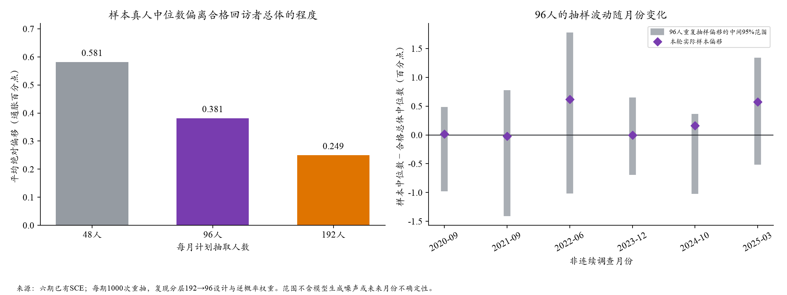

SCE · 2026-10-21 · 已有数据离线分析 · 新API调用0
模型差距与96人抽样波动，应分开判断
模型能力可能影响结果，但本轮“增加两项价格统计后变差”发生在同一个Qwen和同一批人上，不能由参数量差异解释。96人确实带来可观的中位数波动，也不能消除本轮配对比较中观察到的分布收缩。
1. 参数量是否可能是原因？
可能是因素之一，但现在没有证据将差距归于参数量。官方V4.1-Flash披露552B骨干MoE参数，输入／输出每token激活约8B／16B；Qwen2.5-72B披露72.7B参数。两种架构不能按总参数倍率推断能力，实际托管权重与版本还存在不确定性。训练数据、后训练、指令理解和多段信息的使用同样可能影响输出。
来源：DeepSeek官方架构说明、Qwen官方模型卡，核查日2026-10-21。公开模型说明不构成对每次API实际权重的独立验证。
2. 现有证据能区分什么？
- 同输入的小批模型比较：三期共同65个人月，中心MAE DeepSeek1.563、Qwen1.644，差0.081pp；各月有输有赢，不能认定稳定的模型差距。样本小、旧DeepSeek回答非同期、无效概率带来支持选择，均需保留限制。原结果。
- 六期DeepSeek与Qwen对比：环境统计与输出框架也有变化，不是纯换模型；旧同支持分析中Qwen的中心较差，但跨人宽度部分改善，不能概括为所有能力都下降。条件差距分析。
- 最新同Qwen价格对照：只增加总体CPI与能源同比，中心MAE0.634→0.877，W1 2.177→2.952；六期W1都变差。上期≥8%的人群，真人本期组均值12.024%，模型7.438%→4.762%。支持“公共数字压过个人信念”的解释，但未单独识别内容、显著性、长度和位置。本轮结果。
3. 每月96人，大概能波动多少？
本次把六期已观察到的合格回访者总体固定住，每期重复抽样1000次。先按年龄×收入抽192人，再分层抽96人，沿用两步逆概率与调查权重。比较每次样本真人中位数与该月合格总体中位数；没有生成新的模型回答。
96人：平均绝对偏移0.381pp；不同月份0.193—0.606pp。六期等权合并的抽样偏移，中间95%范围约为-1.080至+1.160pp，95%的绝对偏移不超过1.121pp；这不是每个月都相同的范围。48人平均偏移0.581pp，192人为0.249pp。

纵轴都是通胀百分点。左图只衡量真人样本构成；右图灰线是有限已观察总体中的重复抽样范围，不是模型MAE置信区间。
- 2020-09：合格总体930人；本轮有效96人、权重有效样本量56.5；重复抽样平均偏移0.256pp，本轮实际偏移+0.019pp。
- 2021-09：合格总体1049人；本轮有效94人、权重有效样本量59.1；重复抽样平均偏移0.522pp，本轮实际偏移-0.021pp。
- 2022-06：合格总体1017人；本轮有效96人、权重有效样本量65.3；重复抽样平均偏移0.606pp，本轮实际偏移+0.616pp。
- 2023-12：合格总体916人；本轮有效96人、权重有效样本量55.3；重复抽样平均偏移0.193pp，本轮实际偏移+0.000pp。
- 2024-10：合格总体903人；本轮有效95人、权重有效样本量69.0；重复抽样平均偏移0.280pp，本轮实际偏移+0.161pp。
- 2025-03：合格总体841人；本轮有效96人、权重有效样本量61.1；重复抽样平均偏移0.430pp，本轮实际偏移+0.577pp。
4. 对当前结论有什么影响？
权重不均使本轮96人的权重有效样本量只有约55—69；这是权重集中程度的指标，不是中位数精度的严格等价人数。2022-06和2025-03的本轮真人样本中位数比合格总体分别高0.616、0.577pp，会影响对全国水平的描述。
不能把0.381pp当作模型不可突破的误差下限，也不能从模型MAE中直接扣除它。我们的主比较是模型与同一批真人，样本构成效应可以共同抵消，照抄本人上期也共享这批人。原配对重抽样中，增加统计相对食品背景的W1差为+0.776pp，95%区间[+0.541,+0.921]；中心MAE差+0.243pp的区间[−0.005,+0.475]仍跨0。这些结论条件于已选六个开发月。
5. 下一步的实际选择
96人适合筛选机制，不适合凭单月0.1—0.2pp的中心改善判成功。应保留同人配对、分布与先验分组分析；对有希望的机制，再用更多真人和未参与调整的月份验证。扩大人数能减少抽样波动，不能自动修复高先验者被拉向公共锚点。若检验模型能力，只改变模型、统一输入和概率归一化，避免同时改变环境。
边界：固定的SCE回访者总体不是全美人口总体；不包括调查自身代表性误差、未来时期差异或新人的模型输出。行级缓存命中4394次，另以冻结口径计分2526种未缓存十档向量；分析用时58.7秒。原样本、原输入、原答和参考配置均未改。
聚合结果与来源哈希 · 最新价格背景实验